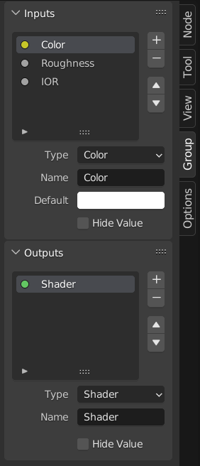
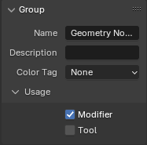
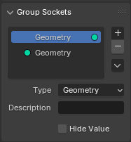
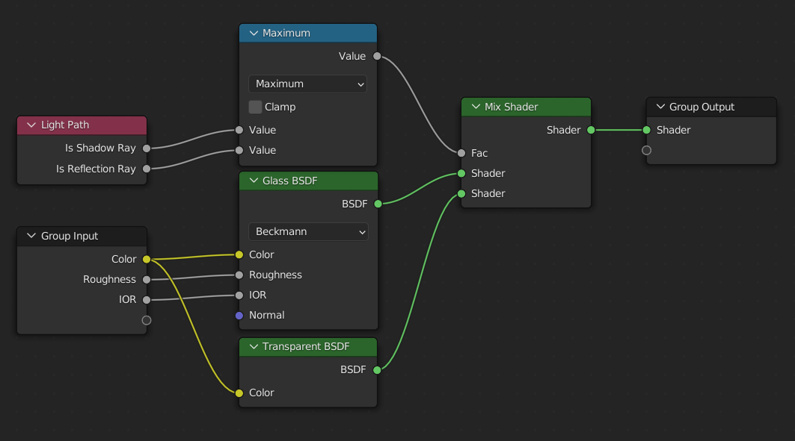

Node Groups¶

Ví dụ về một node group.¶
Việc nhóm các node có thể đơn giản hóa một node tree bằng cách ẩn đi phần phức tạp và tái sử dụng chức năng chung. Một node group được nhận diện về mặt trực quan bằng thanh tiêu đề màu xanh lá của nó.
Về mặt khái niệm, node group cho phép bạn coi một tập node như một đơn vị duy nhất. Chúng tương tự như hàm trong lập trình: có thể tái sử dụng, kết hợp và tham số hóa.
Ví dụ, giả sử bạn tạo một material "Wood" và muốn dùng nó với nhiều màu khác nhau. Bạn có thể nhân đôi toàn bộ thiết lập node cho từng màu, nhưng việc bảo trì các bản sao đó sẽ rất mất công nếu sau này bạn quyết định thay đổi chi tiết vân gỗ. Thay vào đó, bạn có thể chuyển các node tạo ra họa tiết gỗ vào một node group. Sau đó, mỗi material có thể tái sử dụng group này và cung cấp một màu tùy chỉnh làm đầu vào. Mọi cập nhật cho chi tiết vân gỗ chỉ cần thực hiện một lần duy nhất—bên trong node group.
Node group có thể lồng nhau; tức là một group có thể chứa các group khác.
Ghi chú
Node group đệ quy bị cấm để tránh đệ quy vô hạn. Một group không thể chứa chính nó, trực tiếp hay gián tiếp.
Mẹo
Giống như các data-block khác, node group có tên bắt đầu bằng . sẽ bị ẩn khỏi menu và danh sách và chỉ có thể được truy cập qua tìm kiếm. Điều này hữu ích cho các tác giả node asset muốn giấu các group tiện ích nội bộ khỏi người dùng cuối.
Các node Group Input và Group Output được dùng để biểu diễn dữ liệu đi vào và ra khỏi group.
Node Group Input cung cấp quyền truy cập vào các input socket của group từ bên trong node group. Các socket này đóng vai trò như các tham số điều khiển hành vi của group từ bên ngoài. Bạn có thể kết nối chúng với các node nội bộ để điều khiển các giá trị như factor, màu, hoặc đầu vào geometry.
Ghi chú
Các giá trị đầu vào không ảnh hưởng đến đầu ra sẽ bị làm mờ.
Node Group Output định nghĩa dữ liệu được truyền ra khỏi node group. Chỉ những socket được kết nối với node này mới khả dụng như các đầu ra trên chính node group.
Quan trọng
Tránh dùng các node đầu ra như Material Output bên trong node group. Chúng nên được dùng ở node tree cấp cao nhất để cải thiện khả năng tái sử dụng của node group.
Dùng Group Output để truyền dữ liệu ra khỏi một node group.
Cách dùng¶
Quản lý đầu vào/đầu ra¶
Bạn có thể thêm, xóa và sắp xếp lại các input và output socket trong panel Group ở Sidebar. Socket mới cũng có thể được tạo trực tiếp bằng cách kéo một liên kết tới hoặc từ socket rỗng trên node Group Input hoặc Group Output tới một socket khác trong node editor.
Tái sử dụng Node Group¶
Tham khảo
- Menu:
- Shortcut:
Shift-A
Các node group hiện có có thể được đặt lại sau khi đã được định nghĩa ban đầu, dù là trong cùng một node tree hay một node tree khác. Cũng có thể nhập node group từ một blend-file khác bằng .
Mẹo
Khi append node group từ một blend-file khác, Blender không phân biệt giữa các loại như material hay compositing group. Để tránh nhầm lẫn, nên áp dụng một quy ước đặt tên, chẳng hạn dùng tiền tố (Mat_, Comp_, Geo_ v.v.), để chỉ ra ngữ cảnh của group.
Properties¶
Group¶
Tham khảo
- Panel:

Panel Group.¶
Panel này chứa các thuộc tính liên quan đến node group như tên và hình thức của nó.
- Name
Tên của node như hiển thị trong Tiêu đề.
- Mô tả
Thông điệp hiển thị khi di chuột tới Tiêu đề hoặc trong các menu thêm.
- Color Tag
Thẻ màu của node group, ảnh hưởng đến màu của header.
- Node Width
Chiều rộng cho các node group mới tạo.
- (Set Default Node Width)
Đặt chiều rộng dựa trên node group cha trong ngữ cảnh hiện tại
- Show Manage Panel Geometry Nodes
Cho phép hiển thị panel Manage trong các modifier Geometry Nodes khi tạo một modifier từ một node group asset.
Usage Geometry Nodes¶
Panel này chỉ hiển thị trong Geometry Node Editor.
- Modifier
Node group này được dành để dùng với Geometry Nodes Modifier.
- Tool
Node group này được dành để dùng như một tool.
Menu data-block trong header của Geometry Node Editor chỉ liệt kê những node group mà Usage khớp với Node Tree Sub-Type hiện tại.
Mẹo
Nếu bạn vô tình tắt cả hai Usage, node group sẽ không còn truy cập được qua menu data-block nữa. Để có thể truy cập lại, bạn có thể thêm nó như một node vào một node group khác (), chọn node đó và nhấn Tab để vào bên trong. Từ đó, bạn có thể bật lại một trong hai Usage.
Group Sockets¶
Tham khảo
- Panel:

Panel Group Sockets.¶
Panel này được dùng để thêm, xóa, sắp xếp lại và chỉnh sửa các thành phần giao diện người dùng của một node group. Nó định nghĩa cách các socket xuất hiện trên node group và tổ chức chúng cho rõ ràng, dễ dùng.
Các loại mục khả dụng bao gồm:
Inputs: Định nghĩa các input socket cho node group.
Outputs: Định nghĩa các output socket cho node group.
- Panels:
Nhóm và tổ chức các socket liên quan lại với nhau. Hữu ích để cấu trúc các thiết lập node phức tạp. Panel luôn xuất hiện ở dưới cùng của giao diện node. Chúng có thể lồng nhau bằng cách kéo một panel đè lên một panel khác trong danh sách các mục giao diện.
- Panel Toggle:
Thêm một hộp kiểm boolean vào header của panel, cho phép điều khiển nội dung của nó. Tùy chọn này chỉ khả dụng khi một panel đang được chọn trong danh sách các mục giao diện.
Panel toggle có các tùy chọn riêng dưới subpanel Panel Toggle. Lưu ý rằng toggle socket không được liệt kê trực tiếp trong danh sách giao diện—các panel có toggle thay vào đó hiển thị một biểu tượng socket boolean cạnh tên của mình. Để toggle socket hiển thị trở lại, nó phải được gỡ liên kết khỏi panel.
Ghi chú
Panel toggle không tự động tắt hoặc làm mờ các socket của nó. Để tắt socket về mặt hiển thị và chức năng, hãy dùng Switch Node hoặc logic tương tự và ngắt kết nối socket một cách thủ công.
- Interface Item List
Một dạng danh sách UI hiển thị tất cả input/output socket và panel. Mỗi mục có thể được đổi tên và cấu hình riêng biệt. Tên xuất hiện trong giao diện người dùng của node.
Mẹo
Chọn một nhãn socket trên chính node đó cũng sẽ chọn socket đó trong Interface Item List.
Specials
- Duplicate Item
Nhân đôi socket hoặc panel đang được chọn.
- Make Panel Toggle
Chuyển đầu vào boolean đang được chọn thành một toggle cho panel cha của nó. Chỉ khả dụng khi một panel đang được chọn và mục đang hoạt động là một socket boolean.
- Unlink Panel Toggle
Xóa mối quan hệ toggle giữa một socket boolean và một panel, biến nó trở lại thành một đầu vào độc lập thông thường.
Socket
Các thuộc tính khả dụng cho socket phụ thuộc vào vài yếu tố, bao gồm việc nó là input socket hay output socket, kiểu dữ liệu, và loại node tree.
- Type
Loại Socket được tạo ra bởi mục giao diện này.
- Mô tả
Văn bản tooltip hiển thị khi di chuột tới socket.
- Attribute Domain Geometry Nodes -- Output -- Integer Color Vector Boolean Float
Loại phần tử geometry mà attribute tương ứng. Xem Domain của attribute để có danh sách đầy đủ các attribute domain.
- Default Attribute Geometry Nodes -- Integer Color Vector Boolean Float
Tên attribute được dùng mặc định khi node group được dùng làm một geometry nodes modifier.
- Subtype Integer Float Vector String
Chỉ định cách dữ liệu được diễn giải, hiển thị, và đôi khi bị giới hạn trong giao diện người dùng. Cách biểu diễn trực quan, hậu tố đơn vị và hành vi nhập liệu thường phụ thuộc vào Đơn vị Scene.
Thay đổi subtype không làm thay đổi kiểu dữ liệu nền. Nó chỉ ảnh hưởng đến cách giá trị được trình bày và chỉnh sửa.
- Integers
- None:
Các giá trị integer tiêu chuẩn, không có diễn giải đặc biệt.
- Pixel:
Biểu diễn giá trị theo pixel, hiển thị hậu tố "px". Thường dùng cho kích thước, độ phân giải, cỡ ảnh, hoặc các phép đo trong không gian màn hình khác.
- Percentage:
Hiển thị dưới dạng phần trăm. Thường dùng với các giá trị Min và Max đặt là 0 và 100.
- Factor:
Biểu diễn một factor chuẩn hóa giữa cận dưới và cận trên, thường dùng trong khoảng 0.0-1.0.
- Floats
- None:
Các giá trị floating-point tiêu chuẩn, không có đơn vị đặc biệt.
- Pixel:
Biểu diễn giá trị theo pixel, hiển thị hậu tố "px". Thường dùng cho kích thước, độ phân giải, cỡ ảnh, hoặc các phép đo trong không gian màn hình khác.
- Percentage:
Hiển thị dưới dạng phần trăm. Thường dùng với các giá trị Min và Max đặt là 0 và 100.
- Factor:
Một giá trị chuẩn hóa giữa cận dưới và cận trên, thường trong khoảng 0.0-1.0.
- Mass:
Một giá trị khối lượng dùng hệ đơn vị của scene.
- Angle:
Một phép đo góc hiển thị theo độ hoặc radian, tùy vào cài đặt đơn vị của scene.
- Time (Scene Relative):
Thời gian tính bằng frame, tự động chuyển thành giây dựa trên frame rate của scene.
- Time (Absolute):
Thời gian được đo trực tiếp bằng giây.
- Distance:
Một phép đo khoảng cách không gian dùng đơn vị độ dài của scene.
- Wavelength:
Khoảng cách giữa các chu kỳ sóng. Hiển thị bằng millimeter (mm), micrometer (µm), nanometer (nm), hoặc picometer (pm).
- Color Temperature:
Một giá trị nhiệt độ (Kelvin) tương ứng với màu cảm nhận của một nguồn sáng.
- Frequency:
Tần số lặp lại mỗi giây (hertz).
- Vectors
- None:
Các giá trị vector tiêu chuẩn.
- Pixel:
Biểu diễn giá trị theo pixel, hiển thị hậu tố "px". Thường dùng cho kích thước, độ phân giải, cỡ ảnh, hoặc các phép đo trong không gian màn hình khác.
- Percentage:
Mỗi thành phần được hiển thị dưới dạng phần trăm.
- Factor:
Mỗi thành phần được coi như một factor chuẩn hóa.
- Translation:
Một vector displacement dùng đơn vị độ dài của scene.
- Direction:
Một vector hướng hình học, thường được chuẩn hóa.
- Velocity:
Một vector biểu diễn tốc độ và hướng của chuyển động.
- Acceleration:
Một vector biểu diễn tốc độ thay đổi của vận tốc.
- Euler Angles:
Các góc Euler Rotation.
- XYZ:
Tọa độ Descartes. Thành phần thứ tư (W) cũng có thể được hỗ trợ tùy theo ngữ cảnh.
- Strings
- None:
Chuỗi văn bản tiêu chuẩn.
- File Path:
Chuỗi được diễn giải như một đường dẫn tới file, cho phép các hộp thoại chọn file trong giao diện người dùng.
- Dimensions Vector
Đặt số thành phần cho vector socket: 2, 3, hoặc 4. Thay đổi chiều (dimension) ảnh hưởng đến cách socket được vẽ và cách dữ liệu được truyền qua nó.
2D: Chỉ các thành phần X và Y.
3D: Các thành phần X, Y và Z.
4D: Các thành phần X, Y, Z và W.
- Default
Giá trị được dùng khi không có gì kết nối vào socket.
- Min, Max
Các giá trị nhỏ nhất và lớn nhất cho điều khiển UI trong giao diện node.
Quan trọng
Điều này không kẹp (clamp) dữ liệu thực tế đang chạy qua socket. Nếu một giá trị lớn hơn được truyền vào socket, nó vẫn sẽ được xử lý mà không thay đổi.
- Default Input Geometry Nodes, Compositing Nodes -- Input -- Integer Vector Matrix Object
Giá trị được dùng khi socket không được kết nối. Các tùy chọn khả dụng phụ thuộc vào loại socket. Yêu cầu Hide Value phải được bật.
- Default Value:
Giá trị mặc định của node socket.
- Index:
Chỉ số (index) từ ngữ cảnh.
- ID or Index:
Attribute “id” nếu có, nếu không thì dùng chỉ số.
- Normal:
Hướng normal của geometry.
- Position:
Vị trí từ ngữ cảnh.
- Left Handle:
Tay cầm điểm điều khiển Bézier trái từ ngữ cảnh.
- Right Handle:
Tay cầm điểm điều khiển Bézier phải từ ngữ cảnh.
- Scene Frame:
Frame hiện tại trong scene.
- Uniform Image Coordinates:
Tọa độ ảnh đồng nhất của không gian compositing.
- Self Object:
Object chứa geometry nodes modifier đang được thực thi.
- Optional Label Input
Chỉ ra rằng nhãn của socket này không cần thiết để hiểu ý nghĩa của nó. Điều này có thể khiến nhãn bị bỏ qua trong một số trường hợp.
- Hide Value
Ẩn điều khiển giá trị mặc định của socket, kể cả khi nó không được kết nối.
- Layer Selection Geometry Nodes -- Input -- Boolean
Nhận một Grease Pencil Layer hoặc Layer Group làm selection field.
- Hide in Modifier Geometry Nodes -- Input
Ẩn giá trị đầu vào trong giao diện Geometry Nodes modifier. Điều này cho phép socket được dùng bên trong node group, nhưng không hiển thị ra modifier.
Chỉ khả dụng cho input socket của Geometry Nodes.
- Shape Geometry Nodes -- Input
Chỉ định loại dữ liệu bậc cao nào mà socket chấp nhận. Xem Hình dạng Socket để biết thêm thông tin.
- Auto:
Tự động phát hiện hình dạng phù hợp nhất dựa trên cách socket được sử dụng. Đây là tùy chọn mặc định và hoạt động cho hầu hết các trường hợp.
- Dynamic:
Socket có thể thích ứng với nhiều hình dạng, khiến nó linh hoạt khi dùng với các kết nối khác nhau. Hữu ích cho các node group tổng quát được thiết kế để xử lý nhiều kiểu dữ liệu.
- Single:
Chỉ cho phép giá trị đơn (hằng số) thay vì dữ liệu có cấu trúc. Field hoặc grid không thể được kết nối.
- Field:
Socket này mong đợi một field, nghĩa là giá trị có thể thay đổi tùy theo phần tử geometry hoặc ngữ cảnh.
- Grid:
Socket này mong đợi một cấu trúc dữ liệu grid, lưu các giá trị được lấy mẫu trên một volume hoặc không gian 2D.
Panels
- Mô tả
Văn bản tooltip hiển thị khi di chuột tới header của panel.
- Closed by Default
Khi bật, panel sẽ được thu gọn theo mặc định trên các node mới.
Animation¶
Điều khiển dữ liệu animation cho các thuộc tính node group, bao gồm các Action đang hoạt động và Slot được gán của chúng.
Xem Gán Thủ công Action và Slot để biết thêm thông tin.
Make Group¶
Tham khảo
- Menu:
- Shortcut:
Ctrl-G
Tạo một node group mới chứa tất cả các node đang được chọn.
Các node Group Input và Group Output sẽ được tạo để biểu diễn các kết nối tới những node bên ngoài group không được chọn. Đầu vào sẽ được định tuyến tới Group Input và đầu ra được định tuyến tới Group Output.
Khi nhóm một node duy nhất, node group kết quả sẽ:
Giữ lại giao diện của node gốc, bao gồm các panel và giá trị mặc định.
Kế thừa tên của node gốc
Khi nhóm nhiều node, group được tạo với các input và output socket sinh ra từ các kết nối. Trong trường hợp này, một tên chung như "NodeGroup", "NodeGroup.001" v.v. sẽ được dùng.
Insert Into Group¶
Tham khảo
- Menu:
Di chuyển các node đang được chọn vào node group đang hoạt động. Cách dùng: chọn một tập node, kết thúc bằng node group đích, rồi chạy thao tác này để chuyển các node đó vào group đó. Các node được di chuyển sẽ được gom vào một group riêng để giữ nguyên ngữ cảnh kết nối của chúng, với các node group input và output riêng. Các node input và output hiện có của group được cập nhật với socket mới (nếu có) từ các node mới. Node group phải được chỉnh sửa để chỉ chứa một node Group Input và một node Group Output duy nhất.
Edit Group¶
Tham khảo
- Menu:
- Header:
- Shortcut:
Tab, Ctrl-Tab
Khi một node group được chọn, nhấn Tab để đi vào bên trong và xem nội dung của nó. Nhấn Tab lần nữa (hoặc Ctrl-Tab) để rời group và quay lại cấp cha của nó, có thể là node tree cấp cao nhất hoặc một node group khác. Bạn có thể xem breadcrumbs ở góc trên bên trái của node editor để biết mình đang ở đâu trong cấu trúc phân cấp.


Ví dụ về một node group đang được mở rộng.¶
Ungroup¶
Tham khảo
- Menu:
- Shortcut:
Ctrl-Alt-G
Xóa group và đặt các node riêng lẻ vào không gian làm việc editor của bạn. Không mất kết nối nội bộ nào, và giờ đây bạn có thể liên kết các node nội bộ với các node khác trong không gian làm việc của mình.
Separate¶
Tham khảo
- Shortcut:
P
Operator Separate loại bỏ các node đang được chọn khỏi một node group và đặt chúng vào node tree cha. Điều này hữu ích khi các node cần được chỉnh sửa bên ngoài group để rõ ràng hơn hoặc để tái sử dụng.
- Copy
Nhân đôi các node đang được chọn vào node tree cha, trong khi vẫn giữ bản gốc bên trong group. Điều này hữu ích khi bạn muốn tái sử dụng các node bên ngoài group nhưng vẫn giữ nguyên định nghĩa của group.
- Move
Di chuyển các node đang được chọn sang node tree cha, loại bỏ chúng khỏi group ban đầu. Điều này hữu ích khi đơn giản hóa một group hoặc hiển thị trực tiếp nội dung của nó.
Join Group Inputs¶
Tham khảo
- Menu:
- Shortcut:
Ctrl-J
Gộp nhiều node Group Input đang được chọn thành một node Group Input hợp nhất khi có thể. Các liên kết hiện có được giữ nguyên, và các đầu vào trùng lặp được thống nhất để giảm sự lộn xộn và đơn giản hóa node tree.
Thao tác này hữu ích để dọn dẹp các node group đã trở nên lộn xộn hoặc chứa các node đầu vào dư thừa.